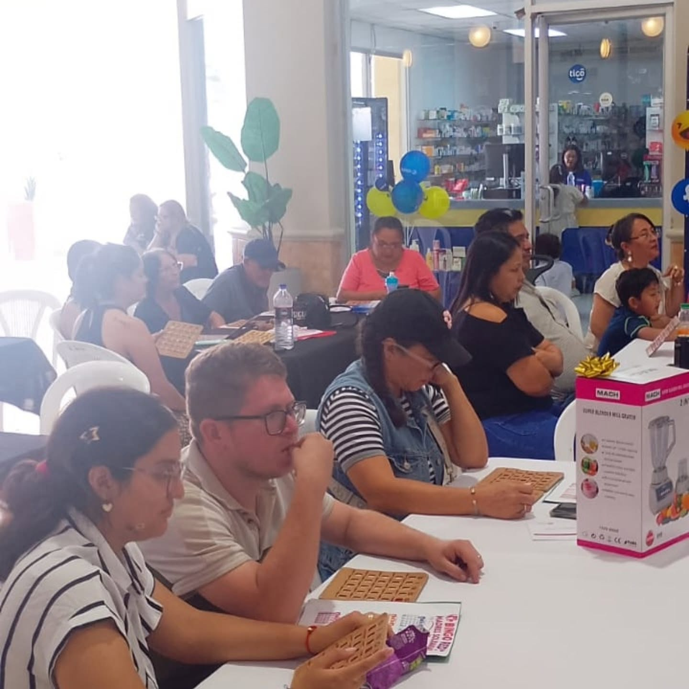

Éxito total en nuestro Bingo Benéfico
Lo vivido el pasado 1 de agosto fue una muestra de que la solidaridad une corazones. Gracias a cada persona, patrocinador y colaborador por hacer posible esta hermosa iniciativa para nuestra noble causa.